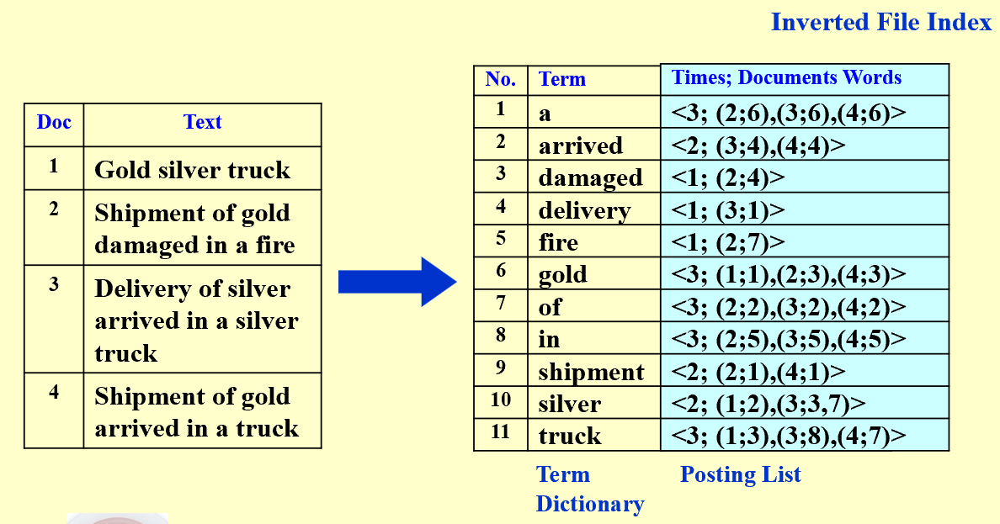
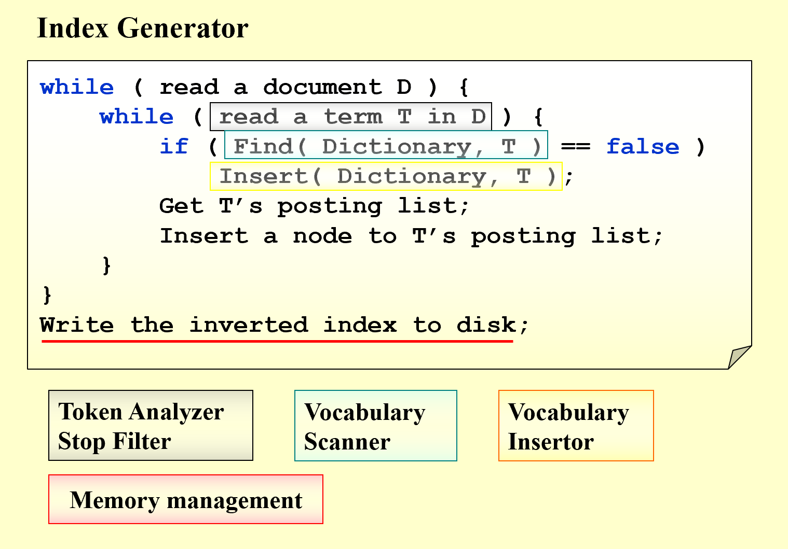
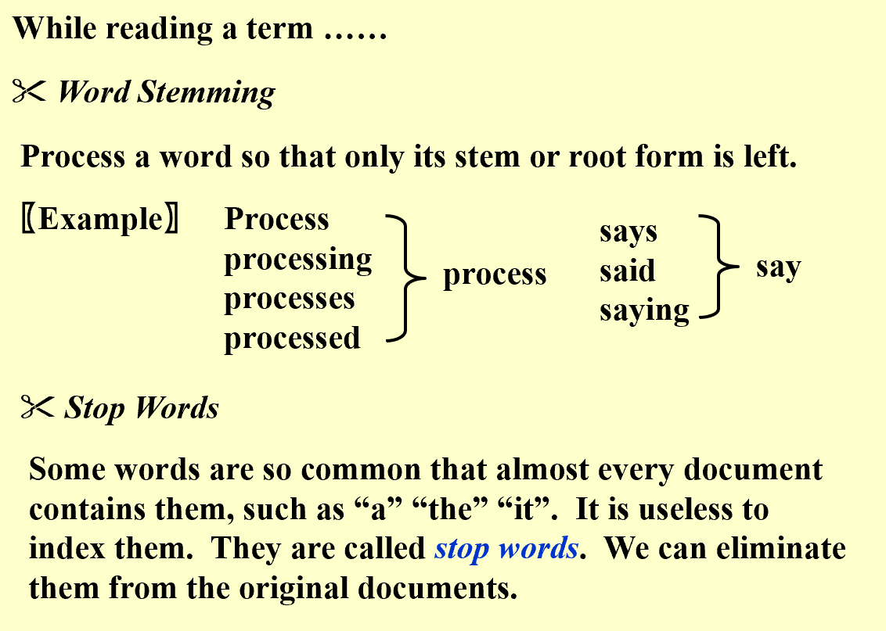
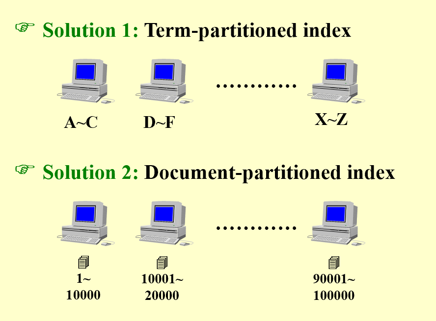
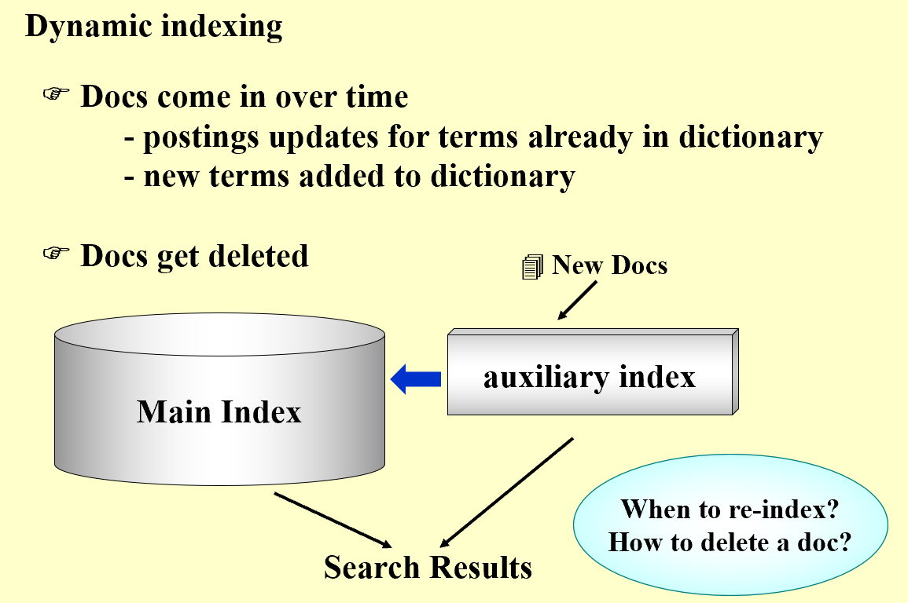
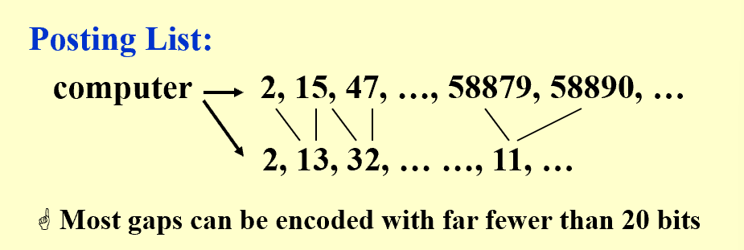
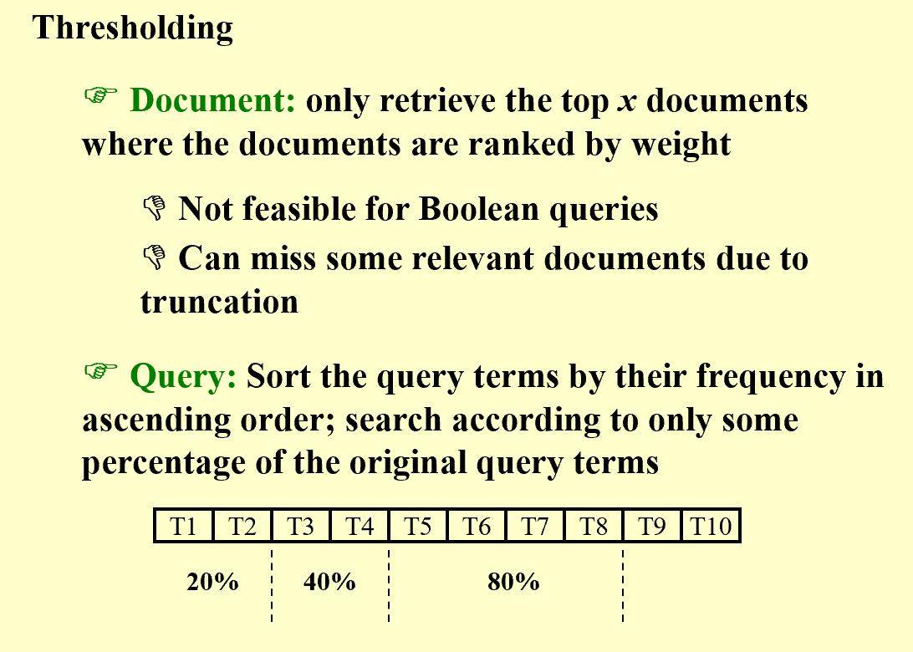
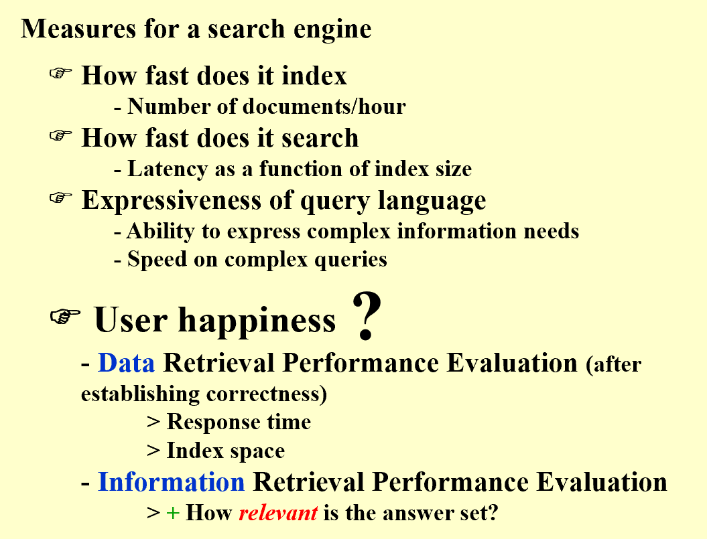
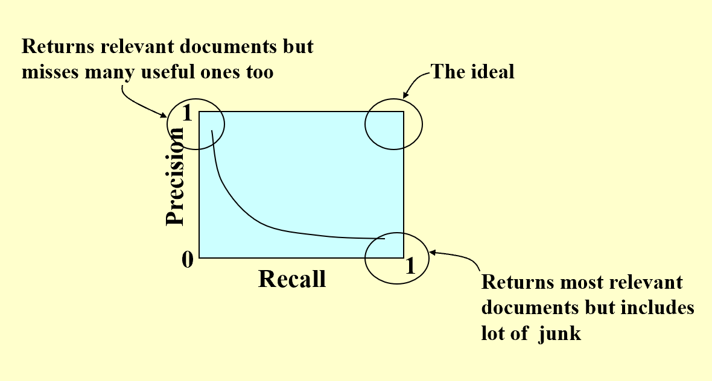

Advanced Data Structure
Week 3
Inverted File Index
Note
Term-Document Incidence Matrix is too sparse to store, so we introduce Inverted File Index - Inverted File Index is a mapping from terms to the documents that contain them (adjacent list)
Definition
Pic

1. How to easily print the sentences which contain the words and highlight the words? - Inverted File Index records the positions of words in each document 1. Why do we keep "times" in the list? - Times represents the frequency of the word in the document, which affects the effieciency some operations. AND操作从最小频率的term开始求交，速度快
Methodology

Index Generator
Note
Token Analyzer & Stop Filter
- Token Analyzer: 词法分析器，将文本分割成单词
- Stop Filter: 去除停用词，如“a”，“the”等

Vocabulary Scanner
- omitted, 课件上找不到对应的
Vocabulary Insertor
- Solution 1：B-, B+, Tries Tree
- Solution 2：Hashing
Memory management
- Solution 1：Distributed Indexing
分布式又有两种

Document-partitioned较好，体现在：一台机器宕机，不像Term-partitioned整个index系统失效，只会影响一部分Document的index - Solution 2：Dynamic Indexing

- Solution 3：Compressed Indexing

需要做index的Doc可能会是一个天文数字，直接按0、1、2、3...的顺序编码，会直接超出数据类型范围。因为Posting List是有序的，所以可以采用差分编码，减少存储空间
Query Processor
Note
- Threshold

对于Query的处理，可以设置阈值，只返回频率大于阈值的term, 优先处理频率小的term - Measure for a search engine

注意 Data Retrieval 和 Information Retrieval有不同的目标和衡量标准 Data Retrieval仅是找到包含term的文档，而Information Retrieval是找到relevant的文档
Note
对于 Relenvance, 可以用Precision和Recall来衡量 - Precision: 找到的文档中，有多少是相关的 - Recall: 所有相关的文档中，找到了多少
